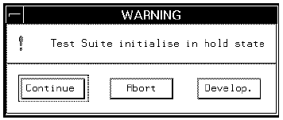

ON_PAUSE
This keyword is used to define what happens when you click the pause button (in the main Operation Control window) during a production run.
For example, the following lines are taken from the wafer_auto application model file.
{ON_PAUSEpause:
ACTIONS
PROB_HND_CALL(red_alert);
SCREEN_DIALOG
BUTTONcheck=CONST_INPUT(1);
BUTTONclean_pr=CONST_INPUT(1);
BUTTONreference=CONST_INPUT(1);
ACTIONS
PROB_HND_CALL(green_alert);
}
Note Sections from the ON_PAUSE declaration are also used in exception handling,
"hold" conditions for example. With exception handling the following sequence of events occurs,
1. The ON_PAUSE pre-ACTION is executed .
2. The particular exception checkbox is displayed, for example,

3. The ON_PAUSE post-ACTION is executed .